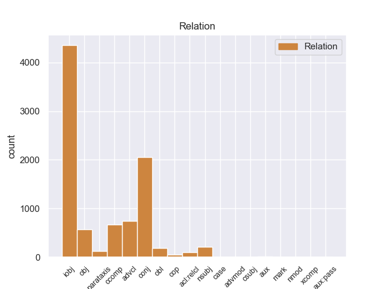
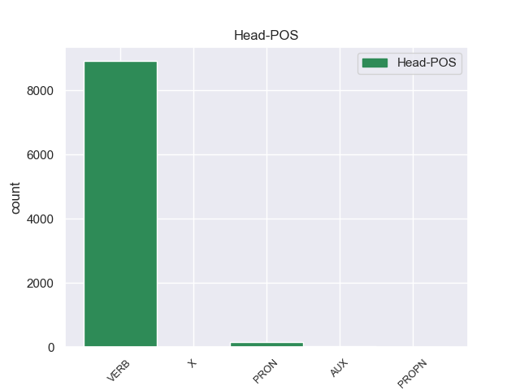
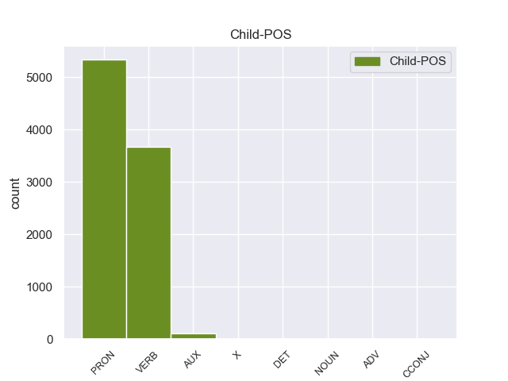

Distribution of features within this leaf



Agreement Rules sorted by frequency.
When the dependent token is None
1 En _ _ _ _ 0 _ _ _
2 1991 _ _ _ _ 0 _ _ _
3 , _ _ _ _ 0 _ _ _
4 como _ _ _ _ 0 _ _ _
5 ya _ _ _ _ 0 _ _ _
6 está _ _ _ _ 0 _ _ _
7 indicado _ _ _ _ 0 _ _ _
8 en _ _ _ _ 0 _ _ _
9 el _ _ _ _ 0 _ _ _
10 párrafo _ _ _ _ 0 _ _ _
11 anterior _ _ _ _ 0 _ _ _
12 , _ _ _ _ 0 _ _ _
13 se él PRON _ Case=Acc,Dat|Person=3|PrepCase=Npr|PronType=Prs|Reflex=Yes 14 iobj _ _
14 creó crear VERB _ Mood=Ind|Number=Sing|Person=3|Tense=Past|VerbForm=Fin 0 _ _ _
15 un _ _ _ _ 0 _ _ _
16 equipo _ _ _ _ 0 _ _ _
17 ad _ _ _ _ 0 _ _ _
18 hoc _ _ _ _ 0 _ _ _
19 para _ _ _ _ 0 _ _ _
20 averiguar _ _ _ _ 0 _ _ _
21 como _ _ _ _ 0 _ _ _
22 se _ _ _ _ 0 _ _ _
23 podía _ _ _ _ 0 _ _ _
24 desarrollar _ _ _ _ 0 _ _ _
25 el _ _ _ _ 0 _ _ _
26 Dialogo _ _ _ _ 0 _ _ _
27 Social _ _ _ _ 0 _ _ _
28 , _ _ _ _ 0 _ _ _
29 este _ _ _ _ 0 _ _ _
30 equipo _ _ _ _ 0 _ _ _
31 estaba _ _ _ _ 0 _ _ _
32 formado _ _ _ _ 0 _ _ _
33 por _ _ _ _ 0 _ _ _
34 representantes _ _ _ _ 0 _ _ _
35 de _ _ _ _ 0 _ _ _
36 todas _ _ _ _ 0 _ _ _
37 las _ _ _ _ 0 _ _ _
38 organizaciones _ _ _ _ 0 _ _ _
39 relacionadas _ _ _ _ 0 _ _ _
40 con _ _ _ _ 0 _ _ _
41 CES _ _ _ _ 0 _ _ _
42 , _ _ _ _ 0 _ _ _
43 UNICE _ _ _ _ 0 _ _ _
44 y _ _ _ _ 0 _ _ _
45 CEEP _ _ _ _ 0 _ _ _
46 ; _ _ _ _ 0 _ _ _
When the dependent token is None and the dependent token is VERB.
1 Una _ _ _ _ 0 _ _ _
2 vez _ _ _ _ 0 _ _ _
3 que _ _ _ _ 0 _ _ _
4 el _ _ _ _ 0 _ _ _
5 Hijo _ _ _ _ 0 _ _ _
6 de _ _ _ _ 0 _ _ _
7 Krypton _ _ _ _ 0 _ _ _
8 suelta sueltar VERB _ Mood=Ind|Number=Sing|Person=3|Tense=Pres|VerbForm=Fin 13 advcl _ _
9 el _ _ _ _ 0 _ _ _
10 misil _ _ _ _ 0 _ _ _
11 , _ _ _ _ 0 _ _ _
12 este _ _ _ _ 0 _ _ _
13 intenta intentar VERB _ Mood=Ind|Number=Sing|Person=3|Tense=Pres|VerbForm=Fin 0 _ _ _
14 huir _ _ _ _ 0 _ _ _
15 de _ _ _ _ 0 _ _ _
16 el _ _ _ _ 0 _ _ _
17 lugar _ _ _ _ 0 _ _ _
18 pero _ _ _ _ 0 _ _ _
19 es _ _ _ _ 0 _ _ _
20 atrapado _ _ _ _ 0 _ _ _
21 en _ _ _ _ 0 _ _ _
22 la _ _ _ _ 0 _ _ _
23 explosión _ _ _ _ 0 _ _ _
24 . _ _ _ _ 0 _ _ _
When the dependent token is None and the dependent token is VERB. and the dependent token is AUX.
1 Una _ _ _ _ 0 _ _ _
2 posibilidad _ _ _ _ 0 _ _ _
3 que _ _ _ _ 0 _ _ _
4 tiene _ _ _ _ 0 _ _ _
5 esta _ _ _ _ 0 _ _ _
6 habitación _ _ _ _ 0 _ _ _
7 gracias _ _ _ _ 0 _ _ _
8 a _ _ _ _ 0 _ _ _
9 que _ _ _ _ 0 _ _ _
10 es _ _ _ _ 0 _ _ _
11 menos _ _ _ _ 0 _ _ _
12 ruidosa _ _ _ _ 0 _ _ _
13 por _ _ _ _ 0 _ _ _
14 encontrar _ _ _ _ 0 _ _ _
15 se _ _ _ _ 0 _ _ _
16 alejada _ _ _ _ 0 _ _ _
17 de _ _ _ _ 0 _ _ _
18 el _ _ _ _ 0 _ _ _
19 resto _ _ _ _ 0 _ _ _
20 de _ _ _ _ 0 _ _ _
21 cuartos _ _ _ _ 0 _ _ _
22 , _ _ _ _ 0 _ _ _
23 es ser AUX _ Mood=Ind|Number=Sing|Person=3|Tense=Pres|VerbForm=Fin 24 cop _ _
24 la él PRON _ Case=Acc|Gender=Fem|Number=Sing|Person=3|PrepCase=Npr|PronType=Prs 0 _ _ _
25 de _ _ _ _ 0 _ _ _
26 convertir _ _ _ _ 0 _ _ _
27 la _ _ _ _ 0 _ _ _
28 en _ _ _ _ 0 _ _ _
29 un _ _ _ _ 0 _ _ _
30 estudio _ _ _ _ 0 _ _ _
31 . _ _ _ _ 0 _ _ _
When the dependent token is None and the dependent token is VERB. and the dependent token is AUX. and the dependent token is ADV.
1 Existe _ _ _ _ 0 _ _ _
2 un _ _ _ _ 0 _ _ _
3 amplio _ _ _ _ 0 _ _ _
4 abanico _ _ _ _ 0 _ _ _
5 de _ _ _ _ 0 _ _ _
6 geometrías _ _ _ _ 0 _ _ _
7 disponibles _ _ _ _ 0 _ _ _
8 , _ _ _ _ 0 _ _ _
9 pero _ _ _ _ 0 _ _ _
10 las _ _ _ _ 0 _ _ _
11 más _ _ _ _ 0 _ _ _
12 usadas _ _ _ _ 0 _ _ _
13 son _ _ _ _ 0 _ _ _
14 las _ _ _ _ 0 _ _ _
15 herramientas _ _ _ _ 0 _ _ _
16 con _ _ _ _ 0 _ _ _
17 perno _ _ _ _ 0 _ _ _
18 fijo _ _ _ _ 0 _ _ _
19 , _ _ _ _ 0 _ _ _
20 que _ _ _ _ 0 _ _ _
21 no _ _ _ _ 0 _ _ _
22 se _ _ _ _ 0 _ _ _
23 mueve _ _ _ _ 0 _ _ _
24 respecto _ _ _ _ 0 _ _ _
25 a _ _ _ _ 0 _ _ _
26 la _ _ _ _ 0 _ _ _
27 sujeción _ _ _ _ 0 _ _ _
28 ( _ _ _ _ 0 _ _ _
29 la _ _ _ _ 0 _ _ _
30 primera _ _ _ _ 0 _ _ _
31 figura _ _ _ _ 0 _ _ _
32 de _ _ _ _ 0 _ _ _
33 la _ _ _ _ 0 _ _ _
34 imagen _ _ _ _ 0 _ _ _
35 ) _ _ _ _ 0 _ _ _
36 , _ _ _ _ 0 _ _ _
37 y _ _ _ _ 0 _ _ _
38 las _ _ _ _ 0 _ _ _
39 herramientas _ _ _ _ 0 _ _ _
40 con _ _ _ _ 0 _ _ _
41 perno _ _ _ _ 0 _ _ _
42 retráctil _ _ _ _ 0 _ _ _
43 ( _ _ _ _ 0 _ _ _
44 segunda _ _ _ _ 0 _ _ _
45 y _ _ _ _ 0 _ _ _
46 tercera _ _ _ _ 0 _ _ _
47 figuras _ _ _ _ 0 _ _ _
48 de _ _ _ _ 0 _ _ _
49 la _ _ _ _ 0 _ _ _
50 imagen _ _ _ _ 0 _ _ _
51 ) _ _ _ _ 0 _ _ _
52 , _ _ _ _ 0 _ _ _
53 que _ _ _ _ 0 _ _ _
54 sí sí ADV _ Mood=Ind|Number=Plur|Person=3|Tense=Pres|VerbForm=Fin 56 advmod _ _
55 que _ _ _ _ 0 _ _ _
56 poseen poseer VERB _ Mood=Ind|Number=Plur|Person=3|Tense=Pres|VerbForm=Fin 0 _ _ _
57 dicho _ _ _ _ 0 _ _ _
58 movimiento _ _ _ _ 0 _ _ _
59 , _ _ _ _ 0 _ _ _
60 acomodándo _ _ _ _ 0 _ _ _
61 se _ _ _ _ 0 _ _ _
62 de _ _ _ _ 0 _ _ _
63 esta _ _ _ _ 0 _ _ _
64 forma _ _ _ _ 0 _ _ _
65 a _ _ _ _ 0 _ _ _
66 las _ _ _ _ 0 _ _ _
67 posibles _ _ _ _ 0 _ _ _
68 variaciones _ _ _ _ 0 _ _ _
69 de _ _ _ _ 0 _ _ _
70 espesor _ _ _ _ 0 _ _ _
71 a _ _ _ _ 0 _ _ _
72 lo _ _ _ _ 0 _ _ _
73 largo _ _ _ _ 0 _ _ _
74 de _ _ _ _ 0 _ _ _
75 la _ _ _ _ 0 _ _ _
76 unión _ _ _ _ 0 _ _ _
77 . _ _ _ _ 0 _ _ _
When the dependent token is None and the dependent token is VERB. and the dependent token is AUX. and the dependent token is ADV. and the dependent token is NOUN.
1 Tras _ _ _ _ 0 _ _ _
2 sesenta _ _ _ _ 0 _ _ _
3 y _ _ _ _ 0 _ _ _
4 nueve _ _ _ _ 0 _ _ _
5 años _ _ _ _ 0 _ _ _
6 de _ _ _ _ 0 _ _ _
7 inactividad _ _ _ _ 0 _ _ _
8 , _ _ _ _ 0 _ _ _
9 la _ _ _ _ 0 _ _ _
10 erupción _ _ _ _ 0 _ _ _
11 tomó tomar VERB _ Mood=Ind|Number=Sing|Person=3|Tense=Past|VerbForm=Fin 0 _ _ _
12 por _ _ _ _ 0 _ _ _
13 sorpresa _ _ _ _ 0 _ _ _
14 a _ _ _ _ 0 _ _ _
15 los _ _ _ _ 0 _ _ _
16 poblados _ _ _ _ 0 _ _ _
17 cercanos _ _ _ _ 0 _ _ _
18 , _ _ _ _ 0 _ _ _
19 a _ _ _ _ 0 _ _ _
20 pesar pesar NOUN _ Case=Acc|Gender=Masc|Number=Sing|Person=3|PrepCase=Npr|PronType=Prs 11 obl _ _
21 de _ _ _ _ 0 _ _ _
22 que _ _ _ _ 0 _ _ _
23 el _ _ _ _ 0 _ _ _
24 Gobierno _ _ _ _ 0 _ _ _
25 había _ _ _ _ 0 _ _ _
26 recibido _ _ _ _ 0 _ _ _
27 advertencias _ _ _ _ 0 _ _ _
28 por _ _ _ _ 0 _ _ _
29 parte _ _ _ _ 0 _ _ _
30 de _ _ _ _ 0 _ _ _
31 múltiples _ _ _ _ 0 _ _ _
32 organismos _ _ _ _ 0 _ _ _
33 vulcanológicos _ _ _ _ 0 _ _ _
34 desde _ _ _ _ 0 _ _ _
35 la _ _ _ _ 0 _ _ _
36 aparición _ _ _ _ 0 _ _ _
37 de _ _ _ _ 0 _ _ _
38 los _ _ _ _ 0 _ _ _
39 primeros _ _ _ _ 0 _ _ _
40 indicios _ _ _ _ 0 _ _ _
41 de _ _ _ _ 0 _ _ _
42 actividad _ _ _ _ 0 _ _ _
43 volcánica _ _ _ _ 0 _ _ _
44 en _ _ _ _ 0 _ _ _
45 septiembre _ _ _ _ 0 _ _ _
46 de _ _ _ _ 0 _ _ _
47 1985 _ _ _ _ 0 _ _ _
48 . _ _ _ _ 0 _ _ _
When the dependent token is None and the dependent token is VERB. and the dependent token is AUX. and the dependent token is ADV. and the dependent token is NOUN. and the dependent token is X.
1 Tres _ _ _ _ 0 _ _ _
2 años _ _ _ _ 0 _ _ _
3 después _ _ _ _ 0 _ _ _
4 , _ _ _ _ 0 _ _ _
5 la _ _ _ _ 0 _ _ _
6 banda _ _ _ _ 0 _ _ _
7 re re X _ Number=Sing|Person=3 8 advmod _ _
8 editaría editar VERB _ Mood=Cnd|Number=Sing|Person=3|VerbForm=Fin 0 _ _ _
9 el _ _ _ _ 0 _ _ _
10 álbum _ _ _ _ 0 _ _ _
11 Absorbiendo _ _ _ _ 0 _ _ _
12 la _ _ _ _ 0 _ _ _
13 Magia _ _ _ _ 0 _ _ _
14 , _ _ _ _ 0 _ _ _
15 masterizada _ _ _ _ 0 _ _ _
16 en _ _ _ _ 0 _ _ _
17 Argentina _ _ _ _ 0 _ _ _
18 por _ _ _ _ 0 _ _ _
19 Eduardo _ _ _ _ 0 _ _ _
20 Pereira _ _ _ _ 0 _ _ _
21 , _ _ _ _ 0 _ _ _
22 de _ _ _ _ 0 _ _ _
23 el _ _ _ _ 0 _ _ _
24 grupo _ _ _ _ 0 _ _ _
25 argentino _ _ _ _ 0 _ _ _
26 Bersuit _ _ _ _ 0 _ _ _
27 Vergarabat _ _ _ _ 0 _ _ _
28 . _ _ _ _ 0 _ _ _
When the dependent token is None and the dependent token is VERB. and the dependent token is AUX. and the dependent token is ADV. and the dependent token is NOUN. and the dependent token is X. and the dependent token is DET.
1 Ellos ellos DET _ Case=Acc,Nom|Gender=Masc|Number=Plur|Person=3|PronType=Prs 2 nsubj _ _
2 acaban acabar VERB _ Mood=Ind|Number=Plur|Person=3|Tense=Pres|VerbForm=Fin 0 _ _ _
3 enamorándo _ _ _ _ 0 _ _ _
4 se _ _ _ _ 0 _ _ _
5 , _ _ _ _ 0 _ _ _
6 pero _ _ _ _ 0 _ _ _
7 no _ _ _ _ 0 _ _ _
8 dan _ _ _ _ 0 _ _ _
9 el _ _ _ _ 0 _ _ _
10 brazo _ _ _ _ 0 _ _ _
11 a _ _ _ _ 0 _ _ _
12 torcer _ _ _ _ 0 _ _ _
13 , _ _ _ _ 0 _ _ _
14 vivenciando _ _ _ _ 0 _ _ _
15 escenas _ _ _ _ 0 _ _ _
16 muy _ _ _ _ 0 _ _ _
17 bien _ _ _ _ 0 _ _ _
18 - _ _ _ _ 0 _ _ _
19 humoradas _ _ _ _ 0 _ _ _
20 de _ _ _ _ 0 _ _ _
21 discusiones _ _ _ _ 0 _ _ _
22 y _ _ _ _ 0 _ _ _
23 peleas _ _ _ _ 0 _ _ _
24 volcánicas _ _ _ _ 0 _ _ _
25 . _ _ _ _ 0 _ _ _
When the dependent token is None and the dependent token is VERB. and the dependent token is AUX. and the dependent token is ADV. and the dependent token is NOUN. and the dependent token is X. and the dependent token is DET. and the dependent token is CCONJ.
1 Esta _ _ _ _ 0 _ _ _
2 celebración _ _ _ _ 0 _ _ _
3 , _ _ _ _ 0 _ _ _
4 declarada _ _ _ _ 0 _ _ _
5 Patrimonio _ _ _ _ 0 _ _ _
6 Oral _ _ _ _ 0 _ _ _
7 e _ _ _ _ 0 _ _ _
8 Inmaterial _ _ _ _ 0 _ _ _
9 de _ _ _ _ 0 _ _ _
10 la _ _ _ _ 0 _ _ _
11 Humanidad _ _ _ _ 0 _ _ _
12 , _ _ _ _ 0 _ _ _
13 ha _ _ _ _ 0 _ _ _
14 decidido _ _ _ _ 0 _ _ _
15 salir _ _ _ _ 0 _ _ _
16 a _ _ _ _ 0 _ _ _
17 Europa _ _ _ _ 0 _ _ _
18 para _ _ _ _ 0 _ _ _
19 transmitir _ _ _ _ 0 _ _ _
20 su _ _ _ _ 0 _ _ _
21 mensaje _ _ _ _ 0 _ _ _
22 de _ _ _ _ 0 _ _ _
23 tolerancia _ _ _ _ 0 _ _ _
24 , _ _ _ _ 0 _ _ _
25 mestizaje _ _ _ _ 0 _ _ _
26 y _ _ _ _ 0 _ _ _
27 alegría _ _ _ _ 0 _ _ _
28 e _ _ _ _ 0 _ _ _
29 invitar _ _ _ _ 0 _ _ _
30 a _ _ _ _ 0 _ _ _
31 todos _ _ _ _ 0 _ _ _
32 a _ _ _ _ 0 _ _ _
33 poner _ _ _ _ 0 _ _ _
34 se _ _ _ _ 0 _ _ _
35 la _ _ _ _ 0 _ _ _
36 máscara _ _ _ _ 0 _ _ _
37 y _ _ _ _ 0 _ _ _
38 disfrutar _ _ _ _ 0 _ _ _
39 lo _ _ _ _ 0 _ _ _
40 bajo _ _ _ _ 0 _ _ _
41 el _ _ _ _ 0 _ _ _
42 lema _ _ _ _ 0 _ _ _
43 ¡ _ _ _ _ 0 _ _ _
44 quién _ _ _ _ 0 _ _ _
45 lo _ _ _ _ 0 _ _ _
46 vive _ _ _ _ 0 _ _ _
47 es ser CCONJ _ Mood=Ind|Number=Sing|Person=3|Tense=Pres|VerbForm=Fin 50 cop _ _
48 quién _ _ _ _ 0 _ _ _
49 lo _ _ _ _ 0 _ _ _
50 goza gozar VERB _ Mood=Ind|Number=Sing|Person=3|Tense=Pres|VerbForm=Fin 0 _ _ _
51 ! _ _ _ _ 0 _ _ _
Disagree Examples:
1 He _ _ _ _ 0 _ _ _
2 estado _ _ _ _ 0 _ _ _
3 una _ _ _ _ 0 _ _ _
4 vez _ _ _ _ 0 _ _ _
5 , _ _ _ _ 0 _ _ _
6 y _ _ _ _ 0 _ _ _
7 aunque _ _ _ _ 0 _ _ _
8 no _ _ _ _ 0 _ _ _
9 tengo _ _ _ _ 0 _ _ _
10 ninguna _ _ _ _ 0 _ _ _
11 queja _ _ _ _ 0 _ _ _
12 acerca _ _ _ _ 0 _ _ _
13 de _ _ _ _ 0 _ _ _
14 el _ _ _ _ 0 _ _ _
15 personal _ _ _ _ 0 _ _ _
16 y _ _ _ _ 0 _ _ _
17 de _ _ _ _ 0 _ _ _
18 el _ _ _ _ 0 _ _ _
19 servicio _ _ _ _ 0 _ _ _
20 , _ _ _ _ 0 _ _ _
21 me yo PRON _ Case=Acc,Dat|Number=Sing|Person=1|PrepCase=Npr|PronType=Prs 22 iobj _ _
22 resultó resultar VERB _ Mood=Ind|Number=Sing|Person=3|Tense=Past|VerbForm=Fin 0 _ _ _
23 decepcionante _ _ _ _ 0 _ _ _
24 pedir _ _ _ _ 0 _ _ _
25 una _ _ _ _ 0 _ _ _
26 pizza _ _ _ _ 0 _ _ _
27 , _ _ _ _ 0 _ _ _
28 concretamente _ _ _ _ 0 _ _ _
29 la _ _ _ _ 0 _ _ _
30 calzone _ _ _ _ 0 _ _ _
31 ( _ _ _ _ 0 _ _ _
32 forma _ _ _ _ 0 _ _ _
33 de _ _ _ _ 0 _ _ _
34 croissant _ _ _ _ 0 _ _ _
35 ) _ _ _ _ 0 _ _ _
36 y _ _ _ _ 0 _ _ _
37 me _ _ _ _ 0 _ _ _
38 encuentro _ _ _ _ 0 _ _ _
39 con _ _ _ _ 0 _ _ _
40 una _ _ _ _ 0 _ _ _
41 pizza _ _ _ _ 0 _ _ _
42 inflada _ _ _ _ 0 _ _ _
43 de _ _ _ _ 0 _ _ _
44 aire _ _ _ _ 0 _ _ _
45 y _ _ _ _ 0 _ _ _
46 hueca _ _ _ _ 0 _ _ _
47 . _ _ _ _ 0 _ _ _
1 El _ _ _ _ 0 _ _ _
2 símbolo _ _ _ _ 0 _ _ _
3 más _ _ _ _ 0 _ _ _
4 habitual _ _ _ _ 0 _ _ _
5 de _ _ _ _ 0 _ _ _
6 la _ _ _ _ 0 _ _ _
7 libra _ _ _ _ 0 _ _ _
8 manesa _ _ _ _ 0 _ _ _
9 es ser AUX _ Mood=Ind|Number=Sing|Person=3|Tense=Pres|VerbForm=Fin 10 cop _ _
10 £ £ X _ Number=Sing|Person=2 0 _ _ _
11 . _ _ _ _ 0 _ _ _
1 ¿ _ _ _ _ 0 _ _ _
2 Ninguno _ _ _ _ 0 _ _ _
3 te tú PRON _ Case=Acc,Dat|Number=Sing|Person=2|PrepCase=Npr|PronType=Prs 4 obj _ _
4 condenó condenar VERB _ Mood=Ind|Number=Sing|Person=3|Tense=Past|VerbForm=Fin 0 _ _ _
5 ? _ _ _ _ 0 _ _ _
1 Y _ _ _ _ 0 _ _ _
2 uno _ _ _ _ 0 _ _ _
3 de _ _ _ _ 0 _ _ _
4 sus _ _ _ _ 0 _ _ _
5 empleados _ _ _ _ 0 _ _ _
6 contables _ _ _ _ 0 _ _ _
7 más _ _ _ _ 0 _ _ _
8 famosos _ _ _ _ 0 _ _ _
9 fue _ _ _ _ 0 _ _ _
10 el _ _ _ _ 0 _ _ _
11 presidente _ _ _ _ 0 _ _ _
12 Julio _ _ _ _ 0 _ _ _
13 Lozano _ _ _ _ 0 _ _ _
14 Díaz _ _ _ _ 0 _ _ _
15 , _ _ _ _ 0 _ _ _
16 quien _ _ _ _ 0 _ _ _
17 en _ _ _ _ 0 _ _ _
18 1938 _ _ _ _ 0 _ _ _
19 publicaría _ _ _ _ 0 _ _ _
20 " _ _ _ _ 0 _ _ _
21 La _ _ _ _ 0 _ _ _
22 Industria _ _ _ _ 0 _ _ _
23 Minera _ _ _ _ 0 _ _ _
24 protegida _ _ _ _ 0 _ _ _
25 por _ _ _ _ 0 _ _ _
26 el _ _ _ _ 0 _ _ _
27 Estado _ _ _ _ 0 _ _ _
28 de _ _ _ _ 0 _ _ _
29 Honduras _ _ _ _ 0 _ _ _
30 " _ _ _ _ 0 _ _ _
31 todo _ _ _ _ 0 _ _ _
32 esto _ _ _ _ 0 _ _ _
33 debido deber VERB _ Mood=Ind|Number=Sing|Person=1|Tense=Pres|VerbForm=Fin 0 _ _ _
34 a _ _ _ _ 0 _ _ _
35 que _ _ _ _ 0 _ _ _
36 el _ _ _ _ 0 _ _ _
37 año _ _ _ _ 0 _ _ _
38 anterior _ _ _ _ 0 _ _ _
39 ( _ _ _ _ 0 _ _ _
40 1937 _ _ _ _ 0 _ _ _
41 ) _ _ _ _ 0 _ _ _
42 la _ _ _ _ 0 _ _ _
43 empresa _ _ _ _ 0 _ _ _
44 minera _ _ _ _ 0 _ _ _
45 norteamericana _ _ _ _ 0 _ _ _
46 llegara llegar VERB _ Mood=Sub|Number=Sing|Person=3|Tense=Imp|VerbForm=Fin 33 advcl _ _
47 a _ _ _ _ 0 _ _ _
48 un _ _ _ _ 0 _ _ _
49 punto _ _ _ _ 0 _ _ _
50 culminante _ _ _ _ 0 _ _ _
51 de _ _ _ _ 0 _ _ _
52 ganancias _ _ _ _ 0 _ _ _
53 , _ _ _ _ 0 _ _ _
54 mediante _ _ _ _ 0 _ _ _
55 una _ _ _ _ 0 _ _ _
56 superproducción _ _ _ _ 0 _ _ _
57 de _ _ _ _ 0 _ _ _
58 aproximada _ _ _ _ 0 _ _ _
59 de _ _ _ _ 0 _ _ _
60 3,211296 _ _ _ _ 0 _ _ _
61 onzas _ _ _ _ 0 _ _ _
62 de _ _ _ _ 0 _ _ _
63 oro _ _ _ _ 0 _ _ _
64 registradas _ _ _ _ 0 _ _ _
65 como _ _ _ _ 0 _ _ _
66 plata _ _ _ _ 0 _ _ _
67 por _ _ _ _ 0 _ _ _
68 motivos _ _ _ _ 0 _ _ _
69 impositivos _ _ _ _ 0 _ _ _
70 . _ _ _ _ 0 _ _ _
1 No _ _ _ _ 0 _ _ _
2 volvería _ _ _ _ 0 _ _ _
3 nunca _ _ _ _ 0 _ _ _
4 y _ _ _ _ 0 _ _ _
5 no _ _ _ _ 0 _ _ _
6 se él PRON _ Case=Acc,Dat|Person=3|PrepCase=Npr|PronType=Prs|Reflex=Yes 8 iobj _ _
7 lo _ _ _ _ 0 _ _ _
8 recomiendo recomer VERB _ Mood=Ind|Number=Sing|Person=1|Tense=Pres|VerbForm=Fin 0 _ _ _
9 a _ _ _ _ 0 _ _ _
10 nadie _ _ _ _ 0 _ _ _
11 . _ _ _ _ 0 _ _ _